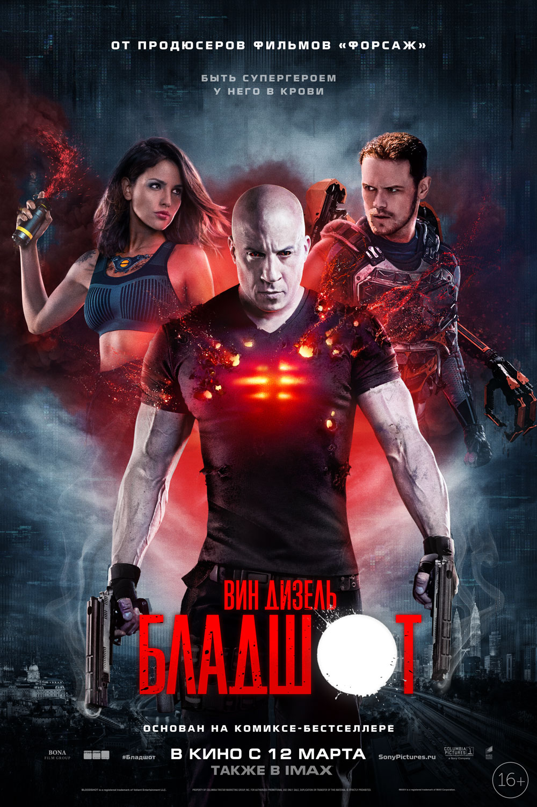

Премьера: 16 апреля 2020 г.
Режиссер: Егор Абраменко
Продюсеры: Фёдор Бондарчук, Михаил Врубель
Сценарий: Олег Маловичко, Андрей Золотарёв
СССР, 1983 год. Советский космонавт-герой Владимир
Вешняков привозит на землю инопланетное существо…
в собственном теле. В секретной лаборатории закрытого
режимного города нейрофизиолог Татьяна Климова пытается
спасти космонавта от чудовища, обнаруживая, что
испытывает к своему пациенту куда больше, чем
профессиональный интерес.

Премьера: 11 ноября 2020 г.
Режиссер: Кэри Фукунага
Год: 2020
Композитор: Ханс Циммер
Сценарий: Кэри Фукунага, Фиби Уоллер-Бридж, Скотт Бёрнс,
Нил Пёрвис, Роберт Уэйд
Джеймс Бонд оставил оперативную службу и наслаждается
спокойной жизнью на Ямайке. Все меняется, когда на острове
появляется его старый друг Феликс Лейтер из ЦРУ с просьбой
о помощи. Миссия по спасению похищенного ученого оказывается
опаснее, чем предполагалось изначально. Бонд попадает в ловушку
к таинственному злодею, вооруженному опасным технологическим оружием.
-
Премьера: 19 марта 2020 г.
Режиссер: Уолт Дорн
Композитор: Теодор Шапиро
Сценарий: Джонатан Айбел, Гленн Бергер, Уоллес Володарски,
Майя Форбс, Элизабет Типпет
Герои узнают, что за пределами их родной деревни существуют
другие тролли со своими музыкальными вкусами. Чтобы спасти
всю расу от новой глобальной напасти, они должны найти способ
объединить разрозненные племена.
- 
Премьера: 20 февраля 2020 г.
Режиссер: David S. F. Wilson
Бюджет: 45 миллионов USD
Кинокомпания: Columbia Pictures, Cross Creek Pictures,
Original Film, One Race Films, Polybona Films
Продюсеры: Вин Дизель, Нил Х. Мориц, Динеш Шамдасани,
Тоби Джаффе
Корпорация RST возвращает к жизни недавно убитого
солдата Рэя Гаррисона. Армия нанороботов в его крови
превратила Рэя в бессмертного Бладшота, наделенного
сверхчеловеческой силой и способностью мгновенно самоисцеляться.
Контролируя тело Рэя, компания влияет на его разум и воспоминания.
Но герой пойдет на все, чтобы выяснить правду.

Премьера: 29 февраля 2020 г.
Режиссер: Дэн Скэнлон
Бюджет: $175–200 млн
Сборы: $103 086 594
Тип мультфильма: компьютерная анимация
Братья-эльфы Иэн и Барли Лайтфуты живут в
волшебном мире, населенном троллями, гоблинами,
гномами, кентаврами и единорогами. Когда-то их мир
переполняла магия, но те времена прошли, и теперь
сказочные существа летают на самолетах, пользуются
автомобилями, и ведут в целом прозаичную жизнь.
Однако неожиданная находка приводит к тому,
что братья решают отправиться в захватывающее
путешествие на поиски настоящего волшебства из древних преданий.
Премьера: 24 февраля 2020 г.
Режиссер: Ли Уоннелл
На основе: Человек-невидимка
Бюджет: 7 миллионов USD
Автор идеи: Ли Уоннелл
На первый взгляд жизнь Сесилии кажется безупречной:
огромный дом, бойфренд — гениальный ученый-миллионер.
Но никто не знает, что на самом деле происходит за
высокими стенами роскошного особняка… И даже идеально
спланированный побег оказывается ловушкой.
Невозможно спрятаться от преследователя, которого не видишь.-
Премьера: 20 февраля 2020 г.
Режиссер: Константин Викторович Буслов
Продюсер: Сергей Бодров
Сценарий: Сергей Бодров
В основе проекта судьба легендарного изобретателя АК-47
Михаила Тимофеевича Калашникова. Нелегкие испытания выпали
на долю конструктора-самоучки прежде чем он осуществил
свою мечту. Калашников был командиром танка в 1941-м,
получил тяжелое ранение под Брянском, а после так и
не смог вернуться на войну. Пока был в госпитале — мечтал,
делал первые чертежи оружия в блокноте и не переставал
корить себя за то, что отсиживается в тылу. Он работал
на заводе, проводил первые испытания в Казахстане и
участвовал во Всесоюзных оружейных конкурсах вместе
с другими конструкторами. В свои 29 он создал оружие,
которое принесло ему мировую славу — АК-47! Калашников
прожил долгую и интересную жизнь, но одна мысль не
оставляла его в покое: «Появись такое оружие у нас тогда,
в сорок первом — война бы закончилась гораздо раньше и
многие из наших парней остались бы живы».

Премьера: 19 февраля 2020 г.
Режиссер: Крис Сандерс
Бюджет: 125–150 млн $
Год: 2020
Сборы: 107,6 млн $
История Бэка, дружелюбного пса, чья размеренная
домашняя жизнь перевернулась с ног на голову во
времена золотой лихорадки в 1880-х, когда его
вырвали из дома в Калифорнии и перевезли в дикую
и холодную Аляску. Будучи новичком в упряжке
почтовой службы, а впоследствии лидером, Бак
попадает в невероятное приключение, находит свое
место в мире и становится хозяином своей жизни.

Премьера: 9 февраля 2020 г.
Режиссер: Джефф Фаулер
Сборы: $306,766,470
Бюджет: $85 млн
Год: 2020
Отвязный ярко-синий ежик Соник вместе с
новообретенным — человеческим — лучшим другом Томом Вачовски
он знакомится со сложностями жизни на Земле и противостоит
злодейскому доктору Роботнику, который хочет пленить Соника
и использовать его безграничные суперсилы для завоевания
мирового господства.
Премьера: 14 февраля 2020 г.
Режиссер: Жора Крыжовников
Продюсеры: Фёдор Бондарчук, Вячеслав Муругов
Кинокомпания: Art Pictures Studio, Фонд кино
Что происходит в сказках после свадьбы принца и принцессы?
Фигуристка Надя и хоккеист Саша поженились и больше всего
на свете мечтают о ребенке. Правда, цена, которую им придется
заплатить за эту мечту, будет невообразимо высока. Кажется,
что после таких потрясений рассчитывать на счастливый
конец уже невозможно. Но если вы так думаете, вы ничего
не знаете о настоящих сказках…

Премьера: 29 января 2020 г. Режиссер: Кэти Янь
Кассовый сбор: 201,9 миллиона USD
Монтажёр: Джей Кэссиди
Сценарий: Кристина Ходсон
Группа супергероинь противостоит главе преступного
мира Готэма, бизнесмену Роману Сионису.
Премьера: 7 января 2020 г.
Режиссеры: Билал Фалла, Адиль Эль Арби
Сборы: $425,5 млн
Год: 2020
Серия фильмов: Плохие парни
Бёрнетт рассорился с напарником, оставил службу в
полиции Майами и занялся частной сыскной деятельностью.
Лоури тем временем переживает кризис среднего возраста
и подумывает завязать с холостяцким образом жизни.
Параллельно ему приходится разбираться с новым
наглым партнёром. «Плохим парням» приходится
вновь объединиться, когда за ними начинает охоту
албанский наёмник, желающий отомстить за смерть
своего брата. Чтобы выжить, бывшие напарники
должны забыть о старых обидах.